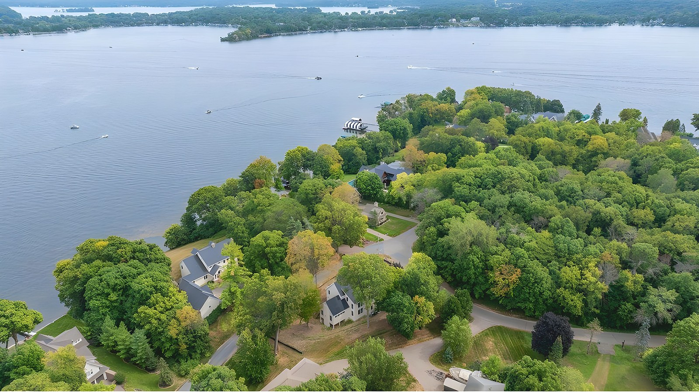
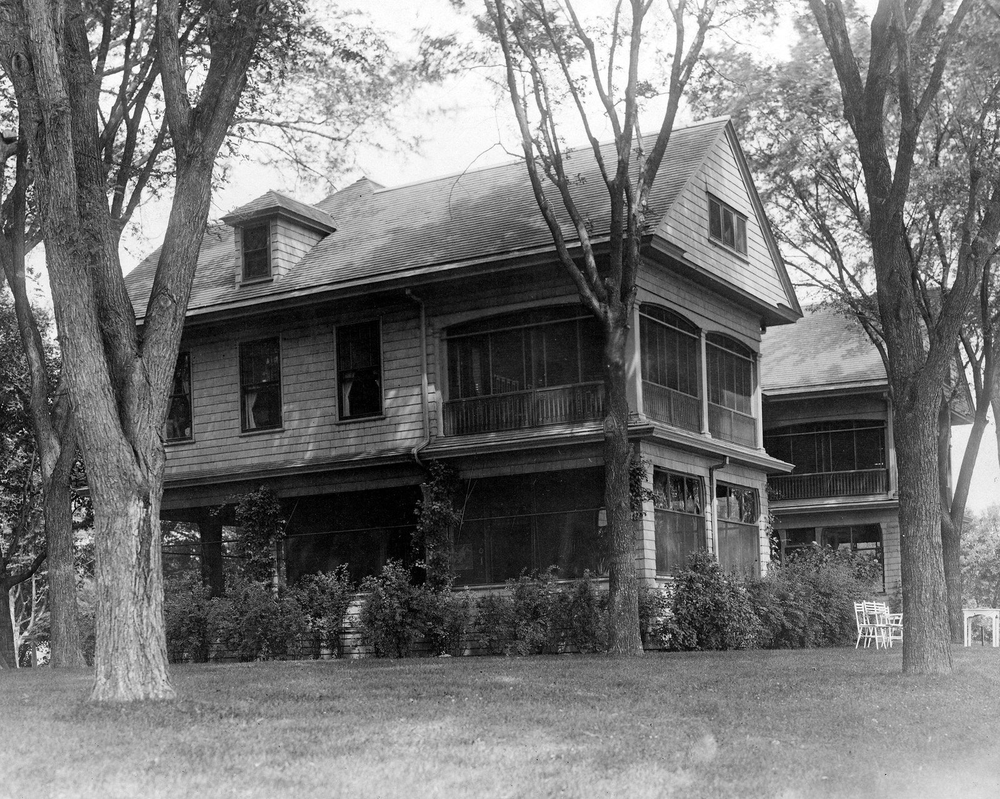
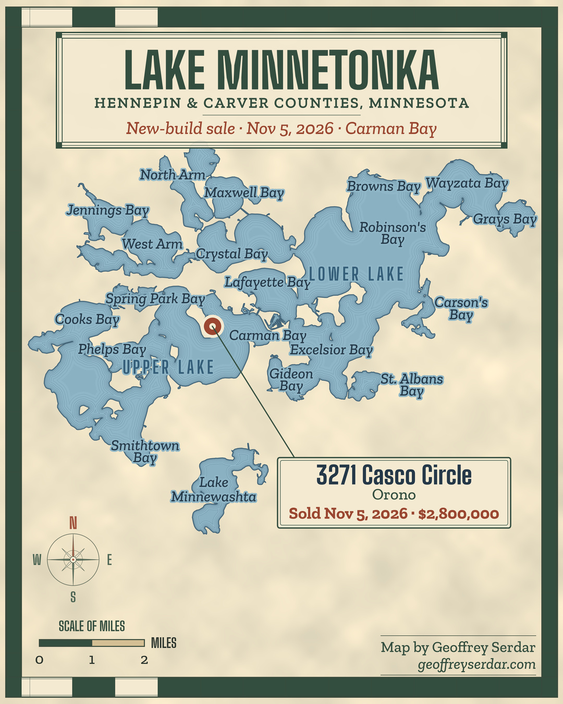

Carman Bay on Lake Minnetonkaand the old roots of Casco Point
By Geoffrey Serdar
A brand-new house on Casco Point in Orono sold this month for $2,800,000. It sits on the point where John Carman, one of the first settlers on the Upper Lake, made his home in 1853.
Here is the house, a little more of the point's story, a map of where it sits, and how this corner of the Upper Lake fits together.

Sold November 5, 2026 for $2,800,000
A new house on Casco Point
Omni Custom Builders bought this lot on Casco Point in 2024 and started building the next summer. The house sits across the street from Casco Point Park in Orono, a short walk from the water, with views of the lake from its decks.
It has six bedrooms on a little over four-tenths of an acre. The builder went with Spanish tile, soft arches, wrought-iron stair rails and a fireplace finished in Venetian plaster, and the main suite has its own deck facing the lake.
It isn't on the shore itself, but the neighborhood shares a swim area. The house went on the market in late August and sold in early November.
If you know the house or the builders and something here isn't right, text me and I'll fix it.
Carman's Point, and Eastover

Carman Bay takes its name from John Carman, who came out from Ohio and reached this water in 1853. One local historian says the family spent their first year on Shady Island, then moved onto the point. An old county history calls it Carman's Point. His daughter Anna married Mathias Cook, and Cooks Bay, farther west, is named for him. A natural spring on the point gave the town of Spring Park its name.
Elbert L. Carpenter, a lumberman, summered here at an estate called Eastover. He and the conductor Emil Oberhoffer started the Minneapolis Symphony Orchestra, which today is the Minnesota Orchestra.

The pin sits on Casco Point in Orono, the little peninsula between Spring Park Bay and Carman Bay. The open Upper Lake is just to the south.
The week it sold
In Orono, this was the only home that closed in the MLS the week of November 2 to 8.
Over in Mound, a lakeshore house on Sinclair Road closed November 6 for $1,700,000.
Start with the shape. Carman Bay is the water between Casco Point and Navarre, at the east end of the Upper Lake. Come west through the Narrows from the Lower Lake, and it is the first of the Upper Lake bays you reach.
Just south of the bay is Locke Point, named for David Locke, who came from Indiana in 1855. On the far side of Casco Point is Spring Park Bay, and a little farther out sits Shady Island.
Out on the point there is a small park, Casco Point Park, and a narrow public beach on the Spring Park Bay side. In winter there is a skating rink.
If you are reading from another state, Lake Minnetonka is a chain of bays west of Minneapolis, and Carman Bay sits on the Upper Lake side, in Orono, close to the Narrows.
This house is in Westonka Public Schools, ISD 277. For more on the town, see the Orono page.
A lot of this point's story lives in people's memories and old shoeboxes. If you can help with any of these, text me or reply, and I'll add it with your name if you like.
Where on Casco Point did Eastover stand, and what became of it?
Photos or stories of Eastover and the Carpenter family.
Send me the address. I’ll look at the recent sales near you myself and write you a one-page read on what your home would likely sell for today. It isn’t an automated estimate, and there’s nothing you have to do with it.
Please add your first name and a working email.
By submitting, you agree Serdar+Partners at Compass may contact you by call or text at the number you provide. Consent is not required to buy or sell. Reply STOP to opt out. Privacy
Thank you. I’ll look at the recent sales near you and send your read soon.